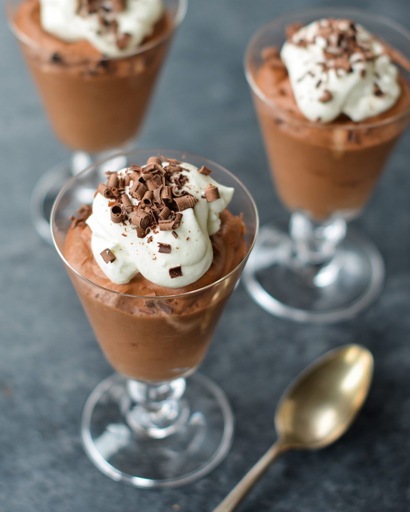

How to Make Chocolate Mousse
- Chocolate mousse has very few ingredients so it is important to use the best quality chocolate — its flavor will shine through.
I like semi-sweet chocolate, but if you prefer your mousse with a deeper chocolate flavor, use bittersweet chocolate.
Remember, the higher the cacao percentage, the less sweet the chocolate.

- Ingredients:
3 tablespoons unsalted butter,
6 ounces semisweet chocolate, best quality,
3 large eggs, yolks and whites separated,
1/2 teaspoon cream of tartar,
1/4 cup plus 2 tablespoons sugar,
1/2 cup heavy cream, cold,
1/2 teaspoon vanilla extract.
FOR SERVING:
1/2 cup heavy cream, cold,
2 teaspoons sugar,
Chocolate shavings.
- To begin, place the butter in a medium microwave-safe bowl. Break the chocolate
into small pieces directly into the bowl (no need to chop it first and dirty a cutting board). Microwave
it in 20-second intervals, stirring between each interval, until the chocolate
is about 75% melted. Stir, allowing the residual heat in the bowl to melt the chocolate completely.
This prevents the chocolate from scorching.
(Alternatively, place the chocolate and butter in a heatproof bowl and place over
a saucepan containing about 1 inch of barely simmering water. Stir with a wooden
spoon until the chocolate is melted and the mixture is smooth.)
- Let the mixture cool for a few minutes,
then whisk in the egg yolks one at a time, mixing until smooth after each addition. Set aside.

- In another bowl, beat the egg whites until foamy. Add the cream of tartar
and beat until soft peaks form (the peaks should be just starting to hold, and
will melt back into themselves after a second).
- Gradually beat in 1/4 cup of the sugar and continue beating until stiff peaks form
(the peaks will stand straight up when the beaters are lifted from the mixture).
- Using a large rubber spatula, fold the egg white mixture into the chocolate mixture.
- Mix until uniform, then set aside.

- In another bowl, beat the heavy cream until it begins to thicken up.
Add the remaining 2 tablespoons of sugar and the vanilla.
- Continue beating until the cream holds medium peaks.
- Add the whipped cream into the chocolate mixture.
- Fold the cream into the chocolate mixture,
making sure not to mix any more than necessary.
- Divide the mousse between 6 individual glasses, cover, and chill until set,
at least 2 hours.
- Up to a few hours before serving, whip the cream until it begins to thicken.
Add the sugar and whip to medium peaks.
Dollop the whipped cream over the mousse and top with chocolate shavings.